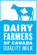
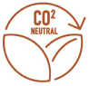

  <main class="wrapper container-fluid">
    <div class="row bighead specialty">
      <div class="col-xs-12 col-lg-6">
        <h1>Specialty Alcohols</h1>
        
        
      </div>
      <div class="col-xs-12 col-lg-6">
        <p class="story">
        At Dairy Distillery, we’ve invested in the equipment, quality assurance and know-how to make the highest quality cream liquor using fresh Canadian cream. Distilleries looking to make their own cream based products can now purchase our cream liqueur base. Offered at a competitive price, Dairy Distillery cream liquor base has the following unique advantages.<br>
        <br>
        100% Canadian cream. Our cream base is made from fresh Canadian cream delivered daily to our distillery in Almonte, Ontario. Our cream liquor is the only to feature the Dairy Farmers of Canada “blue cow” certifying it being made with Canadian dairy. So you know the cream is free of hormones and the cows are cared for lovingly.<br>
        <br>
        Carbon neutral alcohol. You can choose to use your own alcohol in your cream base or opt for our alcohol we make from milk sugar. Our neutral milk spirit leaves the taste and colour of cream to come through. In addition to pairing perfectly with cream, our milk alcohol is carbon neutral, giving your products a unique selling advantage.<br>
        <br>
        Flexible with quick turn around. Whether you’re looking for one or one hundred totes, Dairy Distillery is ready to deliver on time with consistent quality. We offer a range of perfected formulations or we can tailor one to suit your needs. Our cream base, made in Almonte, Ontario, is ready to ship across Canada with no worries of delays or import tariffs.<br>
        <br>
        To learn more contact <a href="mailto:anthony@dairydistillery.com">cream@dairydistillery.com</a>
        </p>
      </div>
    </div>
